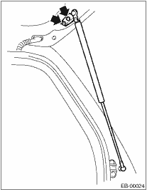

1. Disconnect the ground cable from battery.
2. Open the rear gate.
3. Remove the rear gate trim. 
4. Remove the rear wiper motor.
5. Remove the rear gate garnish assembly.
6. Remove the rear gate outer handle.
7. Remove the rear gate latch assembly.
8. Disconnect the connectors of rear wiper, rear defogger, and other lighting devices.
9. Disconnect the washer hose.
10. Remove the rubber duct (A) connection, and pull out the harness and washer hose from the rear gate.
11. Support the rear gate using a support stand while removing the rear gate damper stay mounting bolts.
NOTE:
When the support stand that is supporting the rear gate is released, rear gate may hit and damage the body. To prevent this, place a shop cloth between body and rear gate.
12. Loosen the rear gate bolts to remove the rear gate.
1. Open the rear gate. Support the rear gate using the support stand.
NOTE:
After the rear gate damper stay is removed, the rear gate cannot stay in the open position. Support the rear gate with a support stand when removing the bolts.
CAUTION:
• Do not damage piston rods and oil seals.
• Never disassemble cylinders: They contain gas.
2. Loosen the bolts to remove rear gate damper stay from the rear gate.
